매일 반복하는 일을 크롬 확장 프로그램으로 줄여요
크롬 오른쪽 위의 퍼즐 조각 단추 안에 있는 작은 프로그램들이 크롬 확장 프로그램이에요. 오늘은 '자주 쓰는 문장 모음' 확장 프로그램을 클로드 코드로 만들어 내 크롬에 설치해요. 오후에는 만든 프로그램을 세상에 내놓는 과정을 배워요. 스토어 출시, 모바일 앱 출시, 이용약관과 개인정보처리방침, 그리고 홍보와 측정(UTM·GA)까지 이어서 봐요.
교육 개요
| 시간 | 09:00–18:00 (점심 12:00–13:00, 수업 8시간) |
|---|---|
| 교과 | [기본] AI 서비스 개발 · 15일차 (총 18일) |
| 교육 목표 | 크롬 확장 프로그램을 만들어 내 크롬에 설치하고, 플랫폼에 출시할 때 따라야 하는 약관과 준비물, 출시 뒤의 약관 관리와 홍보·측정 방법을 안다. |
| 수업이 끝나면 | ① 확장 프로그램을 이루는 파일(manifest, 팝업, 배경 스크립트)을 설명하기 ② 만든 확장 프로그램을 [압축해제된 확장 프로그램 로드]로 설치하고, 깃헙에 올려 보관하기 ③ 플랫폼에 올리면 그 플랫폼의 약관을 따라야 한다는 것을 설명하고, 스토어 등록정보 초안 쓰기 ④ 모바일 앱 출시 기준(애플·구글)의 최근 변화를 말하기 ⑤ AI로 개인정보처리방침·이용약관 초안을 만들고, 약관을 바꿀 때의 절차 말하기 ⑥ 다이렉트·오가닉·페이드를 구분하고, 채널별 UTM 링크를 만들어 GA에서 확인하는 방법 말하기 |
수업 전 준비
- 크롬: 회사 컴퓨터는 확장 프로그램 설치가 막혀 있을 수 있어요. 막혀 있으면 개인 크롬 프로필에서 해요.
- 깃헙 계정: 만든 코드는 깃헙에 올려 보관해요. 깃헙에 로그인해 둬요.
- 내 반복 업무 메모: 어제 과제로 적어 온 것은 오늘 과제(내 반복 업무로 확장 프로그램 만들기)에서 써요.
타임테이블
| 시간 | 구분 | 내용 |
|---|---|---|
| 09:00–09:20 | 오늘의 단어 | 오늘의 단어 |
| 09:20–10:20 | SESSION 1 | 크롬 확장 프로그램은 무엇으로 이뤄지나 |
| 10:30–12:00 | SESSION 2 | 문장 모음 확장 프로그램 만들어 설치하기 |
| 12:00–13:00 | 점심 | |
| 13:00–14:10 | SESSION 3 | 플랫폼에 올린다는 것: 크롬 웹 스토어 출시 |
| 14:10–14:50 | SESSION 4 | 그럼 모바일 앱은? 앱 스토어 출시 기준 |
| 15:00–16:00 | SESSION 5 | 이용약관·개인정보처리방침 만들고 관리하기 |
| 16:10–17:30 | SESSION 6 | 어떻게 알릴 것인가: 홍보·운영과 UTM |
| 17:30–18:00 | 정리 | 오늘 정리와 과제 |
오늘의 단어
오늘 처음 나오는 말을 먼저 짧게 짚고 시작해요.
| 단어 | 뜻 |
|---|---|
| 크롬 확장 프로그램 | 크롬에 기능을 더하는 작은 프로그램. 퍼즐 조각 단추 안에 모여 있어요. |
| manifest.json | 확장 프로그램의 이름, 버전, 쓸 권한, 처음 열 파일을 적어 두는 설명 파일. 크롬은 설치할 때 이 파일을 가장 먼저 읽어요. |
| Manifest V3 | manifest.json을 쓰는 규칙의 3번째 버전. 크롬은 2025년 7월(크롬 138)부터 V2로 만든 확장 프로그램을 모두 꺼 두었어요. 그래서 오늘은 V3로 만들어요. |
| 팝업(popup) | 확장 프로그램 단추를 누르면 뜨는 작은 창 |
| 배경 스크립트(service worker) | 화면 뒤에서 기다리다가 우클릭 메뉴 같은 일이 생기면 일하는 코드 |
| 권한(permissions) | 확장 프로그램이 크롬에게 "이것까지 해도 돼요?"라고 허락받는 목록 |
| 압축해제된 확장 프로그램 로드 | 웹 스토어를 거치지 않고, 내 컴퓨터 폴더의 확장 프로그램을 바로 설치하는 단추. [개발자 모드]를 켜야 보여요. |
| 개발자 모드 | chrome://extensions 오른쪽 위의 스위치. 켜면 내 폴더의 확장 프로그램을 설치하고 고칠 수 있어요. 개발자 등록과는 다른 것이에요. |
| 크롬 웹 스토어 개발자 등록 | 만든 확장 프로그램을 웹 스토어에 올려 다른 사람에게 배포할 때만 하는 등록. 등록비는 한 번만 내는 미화 5달러예요. 오늘 내 크롬에 설치하고 테스트하는 데에는 필요 없어요. |
크롬 확장 프로그램은 무엇으로 이뤄지나
확장 프로그램은 지금까지 만든 웹페이지와 같은 HTML·자바스크립트로 만들어요. 다른 점은 설명 파일(manifest.json)과 권한이에요.
개념1-1. 오늘 만들 '내 문장 모음'의 파일 4개
| 파일 | 하는 일 |
|---|---|
| manifest.json | 이름, 버전, 권한(우클릭 메뉴·저장), 팝업 파일 이름을 적어요 |
| background.js | 우클릭 메뉴 [내 문장 모음에 저장]을 만들고, 누르면 고른 문장을 저장해요 |
| popup.html | 단추를 누르면 뜨는 창의 생김새 |
| popup.js | 저장한 문장을 카드로 보여 주고, 누르면 복사해요 |
문장은 내 크롬 안(chrome.storage.local)에만 저장하고, 최대 30개까지만 남겨요. 바깥 서버로 보내지 않아요.
기획자1-2. 기획서 먼저 쓰기
| 항목 | 내 문장 모음 |
|---|---|
| 누가 | 고객 문의에 같은 안내 문장을 자주 붙여 넣는 운영 담당자 |
| 반복되는 일 | 안내 페이지를 열어 문장을 찾아 복사하기 |
| 확장 프로그램이 할 일 | 드래그 → 우클릭으로 저장, 단추 → 카드 누르면 복사 |
| 저장 위치·개수 | 내 크롬 안, 최대 30개 |
| 필요한 권한 | 우클릭 메뉴(contextMenus), 저장(storage) |
| 하지 않을 일 | 바깥 서버로 보내기, 모든 사이트의 내용 읽기 |
문장 모음 확장 프로그램 만들어 설치하기
1-2 기획서를 클로드 코드에게 주고 만들게 한 뒤, 내 크롬에 설치해요.
개발자·구현2-1. 클로드 코드로 만들기
이번 작업은 내 크롬에 설치해야 하므로 내 컴퓨터(Local) 환경에서 해요. 새 폴더 snippet-ext를 만들어 열어요. 맥은 Finder, 윈도우는 파일 탐색기에서 폴더가 생겼는지 확인해요.
요청: 이 폴더에 크롬 확장 프로그램 '내 문장 모음'을 만들어 줘. 내용: [1-2 기획서 표를 붙여 넣으세요] Manifest V3로 만들어 줘. 권한은 contextMenus와 storage만 써. 외부 라이브러리와 바깥 서버 요청은 쓰지 마. 형식: manifest.json, background.js, popup.html, popup.js 4개 파일. 다 만들면 각 파일이 하는 일과, 크롬에 설치하는 순서를 알려 줘.
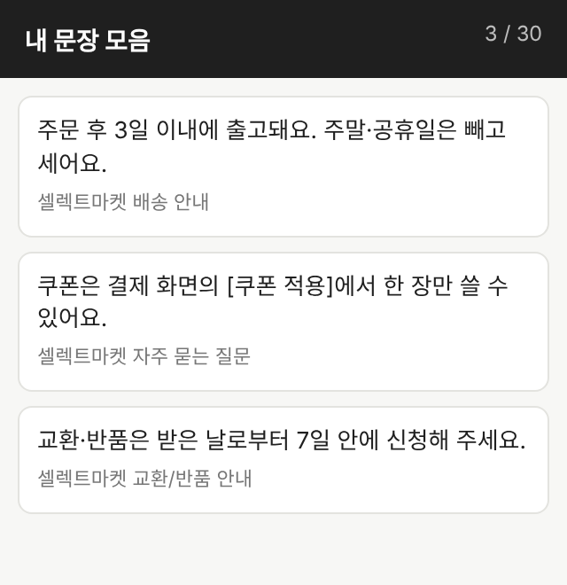
클로드 코드가 만든 파일과 예시 코드를 견줘 볼 수 있어요: manifest.json · background.js · popup.html · popup.js
시간 안에 만들지 못했어도 괜찮아요. 아래 완성본을 내려받아 2-2부터 똑같이 따라 해요.
- 맥은 내려받은 ZIP 파일을 더블클릭해요. 윈도우는 ZIP 파일을 우클릭해 압축 풀기 메뉴를 눌러요.
- 압축을 푼 폴더를 열어 manifest.json이 바로 보이는 폴더까지 들어가요. 폴더가 한 겹 더 있으면 한 번 더 들어가요.
- 그 폴더를 2-2에서 골라요.
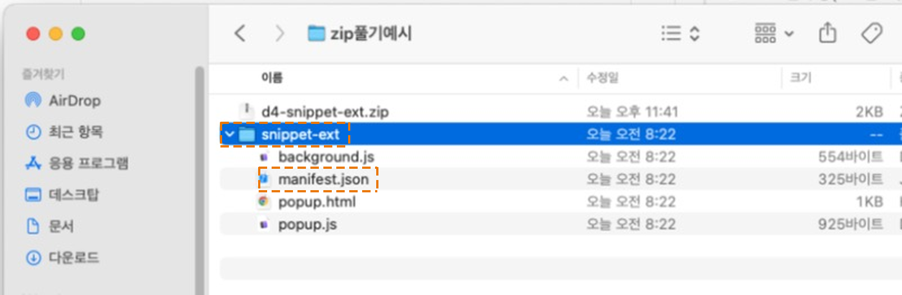
실습2-2. 내 크롬에 설치하기
내 폴더의 확장 프로그램은 개발자 등록 없이 내 크롬에 바로 설치해서 테스트할 수 있어요. 계정을 만들거나 돈을 낼 필요가 없어요. 맥과 윈도우의 순서가 같아요.
크롬 주소창에
chrome://extensions를 넣고 Enter를 눌러요. 이 주소는 링크로 열리지 않아서 직접 입력해야 해요.오른쪽 위 [개발자 모드] 스위치(①)를 켜요.
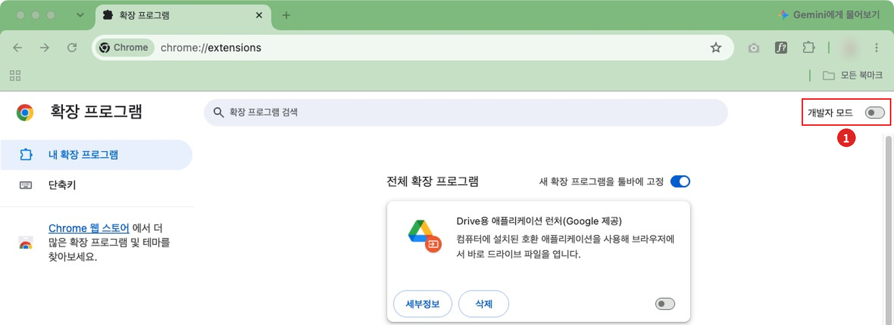
[개발자 모드] 스위치를 켜기 전 화면 (2026-11-18 강사 화면, 맥 크롬 · 빨간 번호 = 누를 곳 · 주황 점선 = 확인할 곳) 왼쪽 위에 새로 생긴 [압축해제된 확장 프로그램 로드](②)를 눌러요.
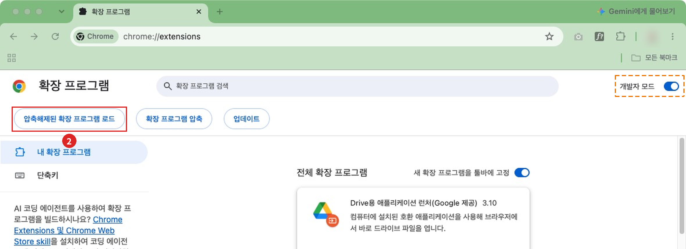
개발자 모드를 켜면 단추 3개가 생겨요 (2026-11-18 강사 화면, 맥 크롬 · 빨간 번호 = 누를 곳 · 주황 점선 = 확인할 곳) 폴더 고르는 창이 열리면 manifest.json이 바로 들어 있는 폴더(snippet-ext)를 한 번 눌러 고르고, 창 오른쪽 아래의 선택 단추를 눌러요. 폴더 안으로 들어가서 파일을 고르는 것이 아니에요.
'내 문장 모음' 카드가 생겼는지 봐요. [새 확장 프로그램을 툴바에 고정]이 켜져 있으면 툴바에 '내' 단추가 바로 생겨요. 꺼져 있으면 퍼즐 조각 단추를 눌러 '내 문장 모음' 옆의 핀을 눌러 고정해요.
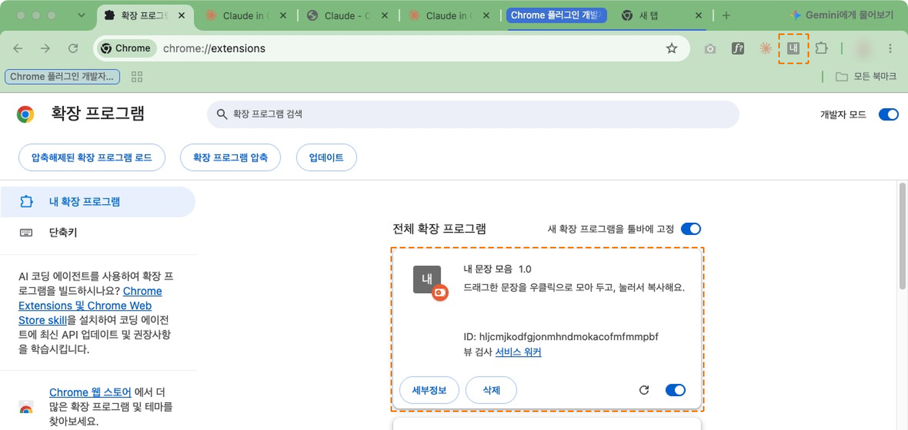
설치가 끝나면 카드와 툴바 단추가 생겨요 (2026-11-18 강사 화면, 맥 크롬 · 주황 점선 = 확인할 곳)
막히면
| 이렇게 보이면 | 이렇게 해요 |
|---|---|
| [개발자 모드] 스위치가 회색이고 켜지지 않아요 | 회사나 학교가 관리하는 크롬은 관리자가 개발자 모드를 막아 둘 수 있어요. 개인 크롬 프로필로 바꿔서 해요. |
| 폴더를 고른 뒤 오류 창이 떠요 | manifest.json이 바로 들어 있는 폴더를 골랐는지 봐요. 한 겹 바깥 폴더나 안쪽 파일을 고르면 설치되지 않아요. |
| [압축해제된 확장 프로그램 로드] 단추가 안 보여요 | [개발자 모드] 스위치가 켜져 있는지 봐요. 단추는 개발자 모드를 켠 뒤에만 보여요. |
출처: Chrome for Developers Hello World extension(개발자 모드 → 압축해제된 확장 프로그램 로드) · Register your developer account(개발자 등록은 웹 스토어에 게시할 때 필요) · ExtensionDeveloperModeSettings 정책(관리자가 개발자 모드를 막는 설정) (2026-11-18 확인)
실습2-3. 써 보고, 고치면 새로고침
아무 웹페이지에서 문장을 드래그하고 우클릭한 뒤 [내 문장 모음에 저장]을 눌러요.
툴바의 '내' 단추(①)를 눌러 카드가 생겼는지 봐요. 오른쪽 위 숫자는 저장한 개수예요.
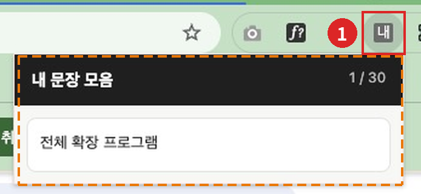
저장한 문장이 카드로 보여요 (2026-11-18 강사 화면, 맥 크롬 · 빨간 번호 = 누를 곳 · 주황 점선 = 확인할 곳) 카드를 눌러요. '복사했어요'가 잠깐 뜨면, 메모장에 붙여 넣어요. 맥은 ⌘+V, 윈도우는 Ctrl+V예요.
클로드 코드에게 고칠 점을 시킨 뒤에는 chrome://extensions에서 '내 문장 모음'의 새로고침(↻) 단추(①)를 눌러야 바뀐 코드가 적용돼요.
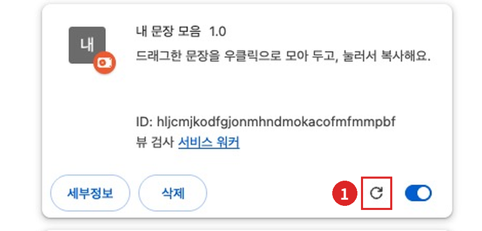
코드를 고친 뒤에는 새로고침(↻)을 눌러요 (2026-11-18 강사 화면, 맥 크롬 · 빨간 번호 = 누를 곳 · 주황 점선 = 확인할 곳)
막히면
| 이렇게 보이면 | 이렇게 해요 |
|---|---|
| [오류] 단추가 빨갛게 보여요 | [오류]를 눌러 나온 글을 복사해 클로드 코드에게 "이 오류를 고쳐 줘"라고 붙여 넣어요. |
| 우클릭 메뉴가 안 보여요 | 문장을 드래그한 상태에서 우클릭했는지 봐요. 그래도 없으면 새로고침(↻) 뒤에 웹페이지도 새로고침하고 다시 해요. |
| 크롬 설정 페이지(chrome://)에서는 안 돼요 | 크롬 내부 페이지에서는 확장 프로그램이 동작하지 않아요. 일반 웹페이지에서 해요. |
개발자·구현2-4. 깃헙에 올려 보관하기
내 컴퓨터에서 만든 코드는 컴퓨터를 바꾸거나 폴더를 지우면 사라져요. 그래서 다 만든 코드는 꼭 깃헙에 올려 보관해요. 3주차 금요일에 마음책방 코드를 깃헙 저장소로 올렸던 것 기억하시나요? 같은 방법이에요.
요청: 이 폴더의 크롬 확장 프로그램을 내 깃헙에 새 공개(Public) 저장소로 만들어서 올려 줘. 내용: 저장소 이름은 snippet-ext-[오늘 날짜]로 해 줘. manifest.json이 저장소 맨 위에 바로 보이게 올려 줘. 키·토큰·개인정보는 올리지 마. 깃이나 깃헙 로그인이 안 되어 있으면 먼저 알려 줘. 형식: ① 저장소 주소 ② 올린 파일 목록 ③ 커밋 메시지를 한 줄씩.
- 공개 저장소로 올리는 이유: 5세션에서 짝이 내 저장소를 내려받아 설치해 봐요. 확장 프로그램 코드에는 키나 개인정보가 없어야 하므로 공개해도 돼요.
- 답에 나온 저장소 주소를 열어, 파일 목록 맨 위에 manifest.json이 보이는지 확인해요.
- 2-3에서 코드를 고쳤다면 "고친 내용을 깃헙에도 올려 줘"라고 한 번 더 시켜요.
결과2-5. 결과
이렇게 보이면 성공드래그 → 우클릭 저장 → 단추 → 카드 클릭 → 붙여 넣기가 되고, 깃헙 저장소 맨 위에 manifest.json이 보인다
선택2-6. (선택) 다른 사람에게 배포하려면: 크롬 웹 스토어 출시
지금 바로 하지 않아도 돼요. 만든 확장 프로그램을 웹 스토어에 올려 다른 사람이 설치하게 하고 싶을 때 필요한 단계예요. 내 크롬에서 쓰거나 짝과 서로 써 보는 것은 지금처럼 개발자 모드로 하면 돼요.
- 웹 스토어에 게시하려면 먼저 개발자로 등록하고 등록비 미화 5달러(한 번만 내요. 원화 금액은 카드 결제 시점 환율로 정해져요)를 내야 해요. 월 구독료가 아니고, 확장 프로그램을 더 올리거나 업데이트할 때 다시 내지 않아요.
- 시작하는 곳: 크롬 웹 스토어 개발자 대시보드(chrome.google.com/webstore/devconsole)
- 등록 뒤에도 소개 글·이미지, 개인정보 보호 탭, 심사를 따로 준비해야 해요.
- 왜 이렇게 준비할 것이 많은지는 3세션에서, 실제 화면은 3-3에서 봐요.
자세히 · 크롬 웹 스토어 출시 순서와 절차 15단계눌러서 펼쳐 보세요
출시는 준비(1~4) → 대시보드 입력(5~12) → 심사와 출시 뒤(13~15) 순서로 해요. 단계마다 어디서 할지, 무엇을 누를지, 무엇이 보이면 끝났는지를 확인하고 다음 단계로 넘어가요.
미리 알아 둘 것 ZIP을 올렸다고 출시된 것이 아니에요. 등록정보와 개인정보 보호 탭을 모두 채우고 [제출하여 검토받기]를 눌러야 심사가 시작되고, 심사를 통과해야 공개돼요.
| 준비물 | 어디서 구하나요 |
|---|---|
| 출시에 쓸 구글 계정 1개 | 새로 만들기를 권해요. 이 메일 주소는 나중에 바꿀 수 없어요 |
| 해외 결제가 되는 카드 | 등록비 미화 5달러(한 번만 내요. 원화 금액은 카드 결제 시점 환율로 정해져요) 결제용 |
| 휴대폰 | 2단계 인증용 |
| '내 문장 모음' 폴더 | 2-1에서 만든 폴더 또는 완성본 ZIP |
준비 구간 · 내 컴퓨터에서
로컬 테스트를 끝내요
어디서내 크롬의 chrome://extensions
- 2-2처럼 개발자 모드로 설치해요.
- 일반 웹페이지 3곳에서 2-3 순서(드래그 → 우클릭 저장 → 단추 → 카드 복사)를 해 봐요.
- 카드의 [오류] 단추가 빨갛지 않은지 봐요.
이렇게 보이면 성공세 곳 모두에서 저장과 복사가 되고, [오류] 단추가 없다
스토어용 ZIP을 만들어요
어디서클로드 코드(내 컴퓨터 Local 환경, snippet-ext 폴더)
스토어용 ZIP은 열었을 때 manifest.json이 맨 위에 바로 보여야 해요. 2-1의 완성본 ZIP은 폴더가 한 겹 더 있어서 그대로 올리면 안 돼요.
맞는 ZIP 자주 하는 실수 snippet-ext-store.zip ├─ manifest.json ← 바로 보여야 함 ├─ background.js ├─ popup.html ├─ popup.js └─ icons/ └─ icon128.png
snippet-ext.zip └─ snippet-ext/ ← 폴더가 한 겹 더 있음 └─ manifest.json
배포 프롬프트 1 · 클로드 코드 입력창에 붙여 넣으세요요청: 이 폴더의 크롬 확장 프로그램을 크롬 웹 스토어에 올릴 배포용 ZIP으로 만들어 줘. 내용: manifest.json이 ZIP 맨 위에 바로 오게 묶어 줘. 128×128 PNG 아이콘이 없으면 icons/icon128.png를 만들고 manifest.json의 icons에 연결해 줘. 메모 파일, .git 폴더, 비밀키는 넣지 마. 기획서에 없는 권한은 추가하지 마. ZIP 이름은 snippet-ext-store.zip으로 해 줘. 형식: ① ZIP 파일 위치 ② ZIP에 들어간 파일 목록 ③ manifest.json의 version과 permissions 줄
- 맥은 Finder, 윈도우는 파일 탐색기에서 ZIP이 생긴 폴더를 열어요.
- ZIP을 더블클릭해 압축을 풀어 보고, 맨 위에 manifest.json이 바로 보이는지 확인한 뒤 풀어 본 폴더는 지워요.
이렇게 보이면 성공snippet-ext-store.zip을 풀면 manifest.json과 icons 폴더가 맨 위에 보인다
스토어 이미지와 소개 문구를 준비해요
어디서내 컴퓨터에 store-assets 폴더를 만들어요
파일 이름(예) 크기 무엇을 담나요 icon-128.png 128×128 확장 프로그램 아이콘(필수) screenshot-01.png ~ 03.png 1280×800 (또는 640×400) ① 단추를 눌러 시작하는 화면 ② 우클릭으로 저장하는 화면 ③ 카드를 눌러 복사한 결과. 1~5장 promo-small.png 440×280 작은 프로모션 이미지 (선택) promo-marquee.png 1400×560 큰 프로모션 이미지 - 스크린샷은 2-3을 하면서 찍어요. 크기가 다르면 무료 이미지 편집 도구로 1280×800에 맞춰요.
- 소개 문구는 3-5 프롬프트로 초안을 받아 store-assets 폴더에 listing.txt로 저장해요.
이렇게 보이면 성공store-assets 폴더에 이미지 파일 3개 이상과 listing.txt가 있다
개인정보처리방침을 공개 주소로 올려요
어디서5-2 실습(깃헙 페이지스)
- 5-2 프롬프트로 처리방침 초안을 만들어요.
- 5-2 순서대로 깃헙 페이지스에 올려요.
- 시크릿 창에서 주소를 열어 봐요.
이렇게 보이면 성공로그인하지 않은 시크릿 창에서 처리방침 주소가 열린다
대시보드 구간 · 크롬 웹 스토어 개발자 대시보드에서
구글 계정 2단계 인증을 먼저 켜요
- 출시에 쓸 구글 계정으로 로그인한 채 위 도움말 링크를 열어요.
- 도움말 안내대로 구글 계정의 [보안] 메뉴에서 2단계 인증을 켜고, 휴대폰 번호를 넣어 인증해요.
2단계 인증이 꺼져 있으면 7단계에서 ZIP이 정상이어도 아래처럼 막혀요.
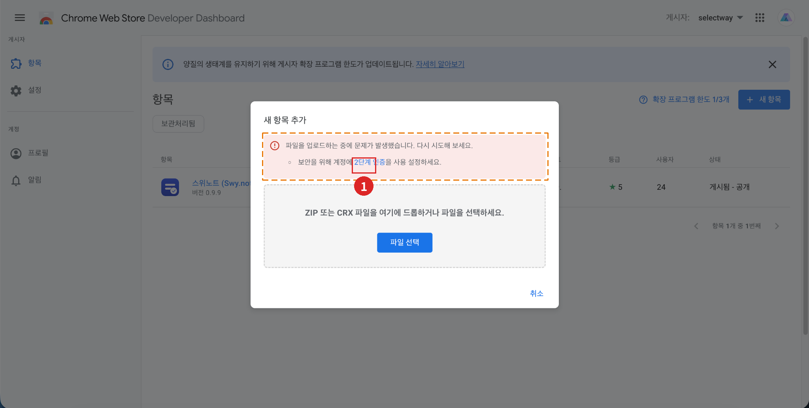
2단계 인증을 켜지 않았을 때 나오는 오류 (2026년 9월 셀렉트웨이 개발자 대시보드 화면 · 빨간 번호 = 누를 곳 · 주황 점선 = 확인할 곳) 이렇게 보이면 성공구글 계정 [보안] 메뉴에서 2단계 인증이 켜져 있다
개발자로 등록하고 등록비를 내요
어디서크롬 웹 스토어 개발자 대시보드(chrome.google.com/webstore/devconsole)
- 처음 들어가면 등록 화면이 나와요. 개발자 계약과 정책을 읽고 동의해요.
- 등록비 미화 5달러(한 번만 내요. 원화 금액은 카드 결제 시점 환율로 정해져요)를 카드로 결제해요.
- 왼쪽 메뉴 '게시자' 아래 [설정]에서 게시자 이름을 넣어요. 스토어의 '제공자' 자리에 보이는 이름이에요.
- 같은 화면에서 연락처 이메일을 넣고 [이메일 인증]을 누른 뒤, 받은 메일의 링크를 눌러요.
- 사업자로 판매하면 Trader, 아니면 Non-Trader를 사실대로 골라요. 판매·추가 기능·구독을 제공하면 실제 주소도 넣어야 해요.
이렇게 보이면 성공대시보드 왼쪽에 [항목] 메뉴와 오른쪽 위 [+ 새 항목] 단추가 보인다
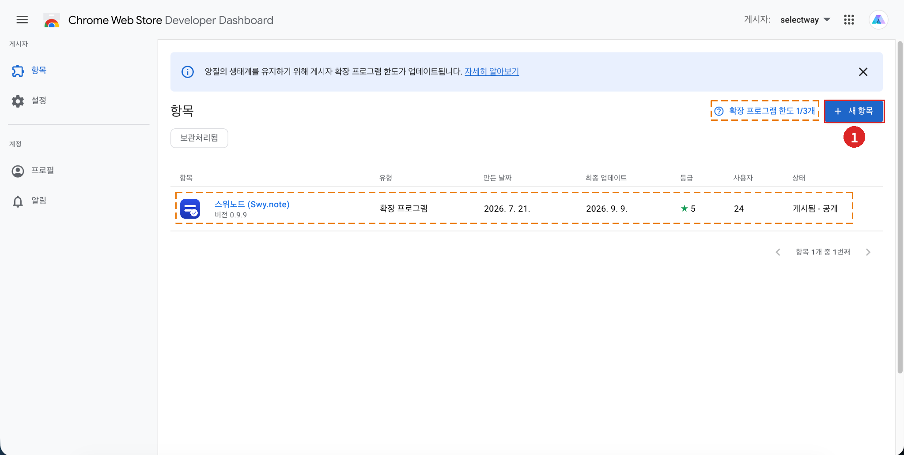
등록이 끝난 대시보드 (2026년 9월 셀렉트웨이 개발자 대시보드 화면 · 빨간 번호 = 누를 곳 · 주황 점선 = 확인할 곳) 새 항목을 만들고 ZIP을 올려요
어디서대시보드 [항목] 화면
- 오른쪽 위 [+ 새 항목]을 눌러요.
- [파일 선택]을 누르고 2단계에서 만든 snippet-ext-store.zip을 골라요.
- 업로드 뒤 설치 문제나 오류가 표시되면, 클로드 코드에게 오류 문장을 붙여 넣어 고친 ZIP을 다시 올려요.
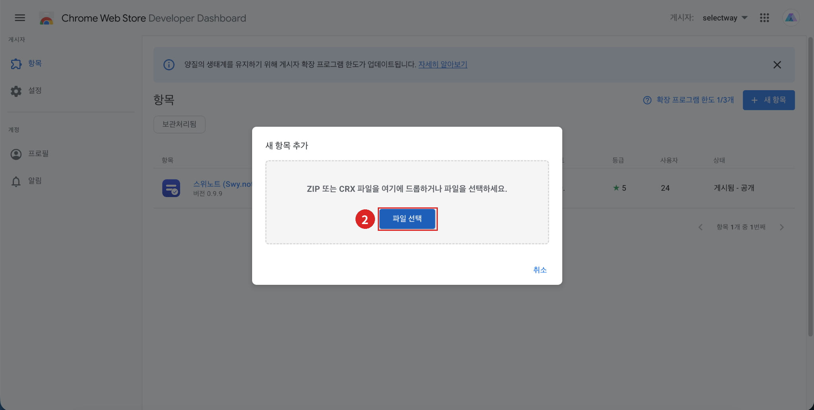
새 항목 추가 창 (2026년 9월 셀렉트웨이 개발자 대시보드 화면 · 빨간 번호 = 누를 곳 · 주황 점선 = 확인할 곳) 이렇게 보이면 성공항목 이름 아래 '상태: 초안'과 왼쪽 메뉴(패키지, 스토어 등록정보, 개인정보 보호, 배포)가 보인다
스토어 등록정보를 채워요
어디서왼쪽 메뉴 [스토어 등록정보]
- 언어를 [한국어]로 골라요.
- listing.txt의 상세 설명을 [설명] 칸에 붙여 넣어요.
- 카테고리를 골라요.
- store-assets 폴더의 아이콘·스크린샷·프로모션 이미지를 각 칸에 올려요.
- 홈페이지·지원 주소가 있으면 넣고 [임시저장]을 눌러요.
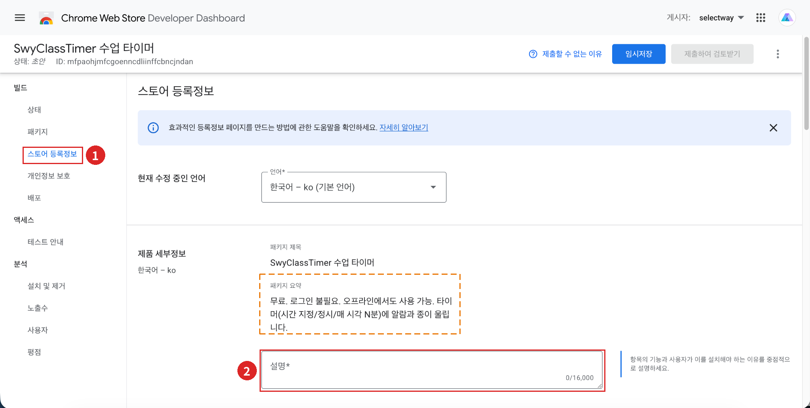
스토어 등록정보 (SwyClassTimer 출시 때 화면이라 이름이 달라요 · 빨간 번호 = 누를 곳 · 주황 점선 = 확인할 곳) 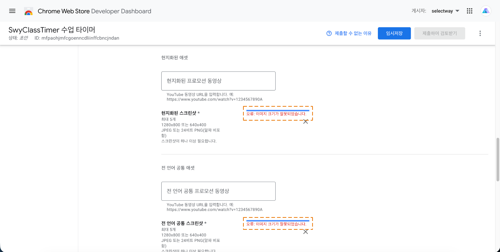
크기가 맞지 않는 이미지를 올렸을 때 (2026년 9월 셀렉트웨이 개발자 대시보드 화면 · 주황 점선 = 확인할 곳) 이렇게 보이면 성공[임시저장] 뒤 이미지 칸에 빨간 오류 문구가 없다
개인정보 보호 탭을 채워요
어디서왼쪽 메뉴 [개인정보 보호]
순서 칸 '내 문장 모음'에 넣을 내용 1 전용 목적 사용자가 드래그해 저장한 문장을 모아 두고, 눌러서 복사하게 돕습니다. 2 contextMenus 사용 근거 사용자가 고른 문장을 우클릭 메뉴로 저장하기 위해 사용합니다. 3 storage 사용 근거 사용자가 저장한 문장을 브라우저 안에 보관하기 위해 사용합니다. 4 원격 코드 [아니요, 원격 코드를 사용하지 않습니다] 5 수집하는 사용자 데이터 아무것도 체크하지 않아요. 바깥으로 보내는 데이터가 없어요. storage를 쓴다는 이유만으로 '사용자 활동'을 체크하지 않아요 6 데이터 사용 인증 3개 실제 동작과 맞으므로 모두 체크 7 개인정보처리방침 URL 4단계에서 공개한 주소 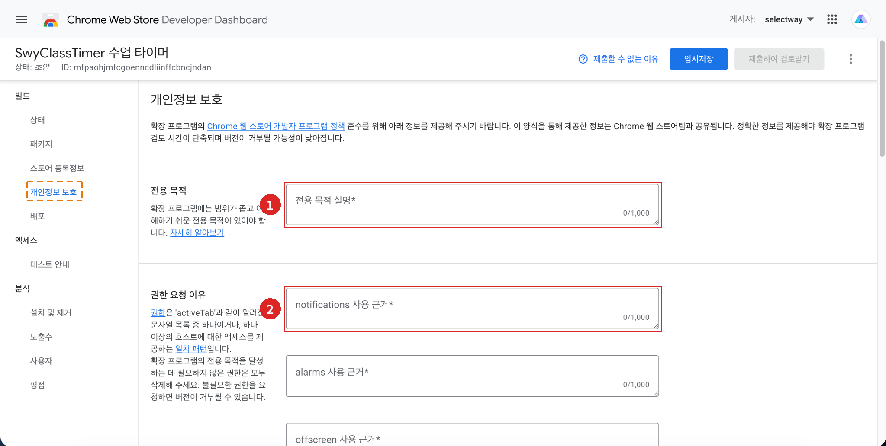
전용 목적과 권한 사용 근거 (SwyClassTimer 예시라 권한이 notifications예요. 우리는 contextMenus·storage를 적어요 · 빨간 번호 = 누를 곳 · 주황 점선 = 확인할 곳) 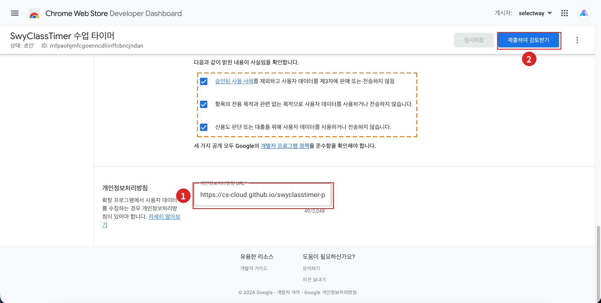
데이터 사용 인증과 처리방침 주소 (2026년 9월 셀렉트웨이 개발자 대시보드 화면 · 빨간 번호 = 누를 곳 · 주황 점선 = 확인할 곳) [임시저장]을 누른 뒤 위쪽 [제출할 수 없는 이유]를 눌러 남은 항목을 확인해요.
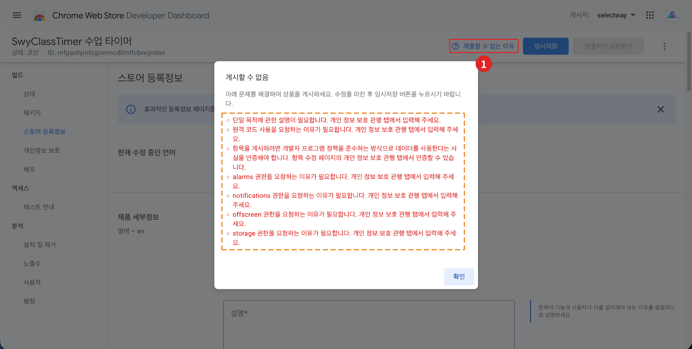
아직 비어 있는 칸이 있을 때 (2026년 9월 셀렉트웨이 개발자 대시보드 화면 · 빨간 번호 = 누를 곳 · 주황 점선 = 확인할 곳) 이렇게 보이면 성공[제출할 수 없는 이유] 창에 남은 항목이 없다
누구에게 공개할지 정해요
어디서왼쪽 메뉴 [배포]
공개 범위 누가 설치하나요 이럴 때 골라요 공개(Public) 스토어 검색과 링크로 누구나 정식 출시 링크 공개(Unlisted) 검색에는 안 나오고 주소를 아는 사람만 수강생·고객에게만 링크로 나눌 때 비공개(Private) 지정한 테스터·구글 그룹·조직 사용자만 출시 전 테스트 - 처음이면 비공개를 고르고, 테스터 이메일을 [설정] 화면의 테스터 칸에 쉼표로 나눠 넣어요.
- 로그인이 필요한 기능이 있으면 [테스트 안내]에 재현 순서와 테스트 계정을 적어요.
이렇게 보이면 성공[배포] 화면에 고른 공개 범위가 저장되어 있다
제출하기 전에 마지막으로 점검해요
어디서대시보드 각 메뉴와 새 크롬 프로필
- 왼쪽 메뉴마다 오류 표시가 없다
- 설명과 스크린샷이 실제 기능과 같다
- 모든 권한의 사용 근거를 적었다
- 개인정보 보호 탭의 답과 개인정보처리방침이 같다
- 문의 메일, 홈페이지, 처리방침 주소가 로그인 없이 열린다
- 새 크롬 프로필에서 ZIP을 풀어 설치해 봤다
이렇게 보이면 성공체크리스트 6개가 모두 체크되었다
[제출하여 검토받기]를 눌러요
어디서항목 화면 오른쪽 위
- [제출하여 검토받기]를 눌러요.
- 확인 창에서 '검토 통과 후 자동으로 게시'를 켤지 정해요. 끄면 승인 뒤 직접 [게시]를 눌러야 하고, 승인 뒤 30일 안에 게시하지 않으면 다시 초안으로 돌아갈 수 있어요.
- 확인 창의 [제출하여 검토받기]를 한 번 더 눌러요.
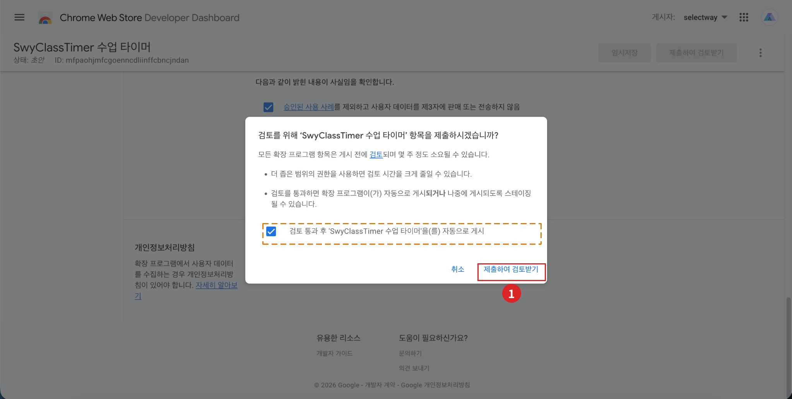
제출 확인 창 (2026년 9월 셀렉트웨이 개발자 대시보드 화면 · 빨간 번호 = 누를 곳 · 주황 점선 = 확인할 곳) 이렇게 보이면 성공항목 상태가 '검토 대기 중'으로 바뀐다
심사와 출시 뒤
심사를 기다려요
어디서대시보드 항목 상태와 연락처 이메일
대부분 며칠 안에 끝나지만 몇 주가 걸릴 수 있어요. 3주가 넘게 '검토 대기 중'이면 심사 안내 페이지의 지원 문의로 연락해요. 넓은 사이트 접근 권한, tabs·downloads 같은 민감한 권한, 읽기 어렵게 바꾼 코드는 심사를 길게 만들어요.
이렇게 보이면 성공연락처 이메일로 승인 또는 거절 메일이 온다
결과에 대응해요
어디서받은 메일과 대시보드
결과 할 일 승인 자동 게시를 켰다면 바로 공개돼요. 껐다면 대시보드에서 [게시]를 눌러요(30일 안) 거절 ① 메일에서 어긴 정책 이름을 찾아요 ② 클로드에게 메일 문장을 붙여 넣고 원인과 고칠 곳을 물어요 ③ 코드·설명·개인정보 보호 탭을 함께 고쳐요 ④ manifest.json의 version을 올려 새 ZIP을 만들어요 ⑤ 7단계부터 다시 올리고 제출해요 이렇게 보이면 성공항목 상태가 '게시됨'으로 바뀐다
출시 당일과 그 뒤를 챙겨요
어디서크롬 웹 스토어 내 상세 페이지와 새 크롬 프로필
- 스토어에서 이름으로 검색해 상세 페이지가 나오는지 봐요.
- 새 크롬 프로필에서 [Chrome에 추가]로 설치하고, 권한 안내 문구·핵심 기능·예외 상황을 다시 확인해요.
- 문의 메일과 처리방침 링크를 눌러 봐요.
- 스토어 공개 링크와 출시 버전을 기록하고, 팀원 1명과 체크리스트를 서로 검토해요.
- 업데이트할 때는 manifest.json의 version을 올린 새 ZIP을 [패키지]에 올려요. 업데이트도 같은 심사를 받고, 새 권한을 추가하면 사용자에게 다시 동의를 받을 수 있어요.
이렇게 보이면 성공새 프로필에서 스토어로 설치한 '내 문장 모음'이 2-3처럼 동작한다
이전 교안: 셀렉트웨이 「Chrome 확장 프로그램 웹 스토어 출시 가이드」 V2(2026-09-16, SwyClassTimer 실제 출시 기준). 등록비: Chromium Blog New developer dashboard and registration flow("$5.00 fee to register"). 대시보드 주소·등록 순서: Chrome for Developers Register your developer account, 게시자 이름·연락처 이메일 인증·실제 주소·테스터: Set up your developer account (2026-11-19 확인). 원화 금액은 카드사 결제 시점 환율에 따라 달라져요.
플랫폼에 올린다는 것: 크롬 웹 스토어 출시
오전에 만든 확장 프로그램은 내 크롬에서만 돌아가요. 다른 사람이 설치하게 하려면 크롬 웹 스토어에 올려야 하고, 그 순간부터 구글이 정한 약관과 정책을 따라야 해요.
개념3-1. 플랫폼에 올리면 그 플랫폼의 약관을 따라요
크롬 웹 스토어, 애플 앱 스토어, 구글 플레이처럼 다른 회사가 운영하는 장터를 플랫폼이라고 불러요. 내 프로그램을 플랫폼에 올리려면 먼저 플랫폼의 개발자 약관에 동의해야 해요. 그때부터 내 프로그램은 플랫폼의 규칙 안에서만 판매·배포할 수 있어요.
실제로 이런 일이 있었어요. 여러분이 크롬 확장 프로그램을 스토어에 올렸다면, 아래 변화를 모두 따라야 했어요.
| 언제 | 플랫폼이 바꾼 것 | 만든 사람이 해야 했던 일 |
|---|---|---|
| 2025년 7월 | 크롬 138부터 Manifest V2 확장 프로그램을 모든 사용자에게서 꺼 두었어요 | V3로 다시 만들어야 계속 쓸 수 있어요. 그래서 오늘도 V3로 만들었어요 |
| 2026년 4월 | 새 확장 프로그램 제출이 몰려 심사 대기 시간이 길어졌다고 공지했어요 | 출시 날짜를 심사 기간만큼 넉넉하게 잡아야 해요 |
| 2026년 8월 20일 | 게시자마다 올릴 수 있는 확장 프로그램 수(슬롯)를 기본 2개로 정했어요. 품질과 사용량에 따라 달라지고, 대시보드에서 늘려 달라고 요청할 수 있어요 | 여러 개를 올리려면 한도를 먼저 확인해요 |
| 구분 | 내 컴퓨터에서 쓰기 (오전) | 크롬 웹 스토어에 올리기 |
|---|---|---|
| 계정·비용 | 필요 없어요 | 개발자 계정 등록, 등록비 미화 5달러(한 번만 내요. 원화 금액은 카드 결제 시점 환율로 정해져요), 구글 계정 2단계 인증 |
| 심사 | 없어요 | 있어요. 새 항목과 업데이트 모두 같은 심사를 받아요 |
| 설치하는 사람 | 폴더를 받은 사람이 개발자 모드로 설치 | 누구나 스토어에서 [Chrome에 추가]로 설치 |
| 따라야 할 규칙 | 내 컴퓨터의 크롬 설정 | 개발자 약관, 프로그램 정책, 개인정보 공개 규칙 |
모바일 앱도 마찬가지예요. 애플 앱 스토어와 구글 플레이에 올리는 순간 각 회사의 심사 지침과 약관을 따라야 해요. 4세션에서 자세히 봐요.
출처: Chrome for Developers Manifest V2 support timeline · PSA: Increase in review times (2026-04-23) · Chrome Web Store updates (2026-08-20) · Review process (2026-11-18 확인)
- 플랫폼
- 다른 회사가 운영하고, 여러 사람이 만든 프로그램을 모아 배포·판매하는 장터. 크롬 웹 스토어, 앱 스토어, 구글 플레이가 그래요
- 개발자 약관
- 플랫폼에 프로그램을 올리는 사람이 지켜야 할 계약. 동의해야 계정을 만들 수 있어요
- 심사
- 플랫폼이 올라온 프로그램을 정책에 맞는지 확인하는 과정. 통과해야 공개돼요
개념3-2. 출시 전에 준비할 것
스토어에 올리는 일은 "ZIP 올리기"로 끝나지 않아요. 사용자가 보는 소개 페이지와 심사자가 보는 개인정보 정보까지 채워야 [검토를 위해 제출] 단추가 켜져요.
| 구분 | 준비할 것 | 확인할 점 |
|---|---|---|
| 계정 | 개발자 계정, 등록비 미화 5달러(한 번만 내요. 원화 금액은 카드 결제 시점 환율로 정해져요), 2단계 인증, 게시자 이름, 연락처 이메일 인증, Trader/Non-Trader 선언 | 크롬 웹 스토어 개발자 대시보드(chrome.google.com/webstore/devconsole)에서 시작해요. 계정 이메일은 나중에 바꿀 수 없어요. 순서는 2-6 자세히를 따라가요 |
| 패키지 | 배포용 ZIP | ZIP을 열었을 때 manifest.json이 맨 위에 바로 보여야 해요. 2-1 완성본 ZIP은 폴더째 묶여 있어서 그대로 올리면 안 돼요 |
| 이미지 | 아이콘 128×128, 스크린샷 1280×800(또는 640×400) 1~5장, 작은 프로모션 이미지 440×280, 선택: 마키 1400×560 | 크기가 다르면 '이미지 크기가 잘못되었습니다'가 떠요 |
| 소개 문구 | 패키지 요약, 상세 설명, 카테고리, 홈페이지·지원 주소 | 실제로 없는 기능과 "최고", "유일" 같은 과장 표현은 쓰지 않아요 |
| 개인정보 보호 탭 | 전용 목적, 권한마다 사용 이유, 원격 코드 사용 여부, 사용자 데이터 사용 인증, 개인정보처리방침 주소 | 답한 내용, 개인정보처리방침, 실제 코드 동작이 서로 맞아야 해요 |
출처: Chrome for Developers Register your developer account · Supplying images · Privacy practices (셀렉트웨이 출시 가이드 교안, 2026-09 검토)
- Trader / Non-Trader
- 확장 프로그램으로 장사를 하는 사업자인지(Trader) 아닌지(Non-Trader)를 스스로 밝히는 항목. Trader는 법적 이름·주소 같은 정보를 인증하고 일부가 스토어에 공개돼요
- 전용 목적
- 이 확장 프로그램이 하는 한 가지 일을 짧게 적은 설명. 심사자는 권한이 이 목적에 꼭 필요한지 봐요
- 원격 코드
- 확장 프로그램이 실행 중에 바깥 서버에서 자바스크립트를 내려받아 실행하는 것. Manifest V3에서는 허용되지 않아요
사례3-3. 셀렉트웨이가 실제로 출시한 화면 따라 보기
셀렉트웨이는 HTML 화면에 댓글을 다는 확장 프로그램 '스위노트(Swy.note)'와 수업 시간 알림 확장 프로그램 'SwyClassTimer'를 직접 스토어에 올렸어요. 아래는 그때 실제로 거친 화면이에요. 여러분이 출시할 때도 같은 순서예요.
개발자 대시보드의 [+ 새 항목](①)을 누르고, [파일 선택](②)으로 ZIP을 올려요.
새 항목 추가 창 (2026년 9월 셀렉트웨이 개발자 대시보드 화면 · 빨간 번호 = 누를 곳 · 주황 점선 = 확인할 곳) 업로드가 막히면 오류 문구를 읽어요. 구글 계정에 2단계 인증이 꺼져 있으면 ZIP이 정상이어도 올라가지 않아요. 문구 속 [2단계 인증](①)을 눌러 켠 뒤 다시 올려요.
2단계 인증을 요구하는 오류 (2026년 9월 셀렉트웨이 개발자 대시보드 화면 · 빨간 번호 = 누를 곳 · 주황 점선 = 확인할 곳) 왼쪽 [스토어 등록정보](①)에서 패키지 요약을 확인하고 [설명](②)을 채워요. 이미지도 이 화면에 올려요.
스토어 등록정보 (2026년 9월 셀렉트웨이 개발자 대시보드 화면 · 빨간 번호 = 누를 곳 · 주황 점선 = 확인할 곳) 왼쪽 [개인정보 보호] 탭에서 [전용 목적](①)과 권한마다 [사용 근거](②)를 적어요.
전용 목적과 권한 사용 근거 (2026년 9월 셀렉트웨이 개발자 대시보드 화면 · 빨간 번호 = 누를 곳 · 주황 점선 = 확인할 곳) 하나라도 비어 있으면 제출할 수 없어요. 위쪽 [제출할 수 없는 이유](①)를 누르면 남은 항목이 빨간 글씨로 나와요.
제출할 수 없는 이유 (2026년 9월 셀렉트웨이 개발자 대시보드 화면 · 빨간 번호 = 누를 곳 · 주황 점선 = 확인할 곳) 개인정보 보호 탭 맨 아래 데이터 사용 인증을 실제 동작대로 체크하고, [개인정보처리방침 URL](①)을 넣은 뒤 [제출하여 검토받기](②)를 눌러요.
데이터 사용 인증과 개인정보처리방침 주소 (2026년 9월 셀렉트웨이 개발자 대시보드 화면 · 빨간 번호 = 누를 곳 · 주황 점선 = 확인할 곳) 확인 창에서 '검토 통과 후 자동으로 게시'를 켤지 정하고 [제출하여 검토받기](①)를 눌러요.
제출 확인 창 (2026년 9월 셀렉트웨이 개발자 대시보드 화면 · 빨간 번호 = 누를 곳 · 주황 점선 = 확인할 곳)
스토어에 공개된 스위노트 페이지를 열어 썸네일(아이콘), 소개 이미지, 소개 문구가 어떻게 나뉘어 있는지 봐요. 소개 문구는 "누구의 문제를 → 어떤 기능으로 → 어떤 결과로"의 순서로 쓰고, 개인정보는 "데이터를 모으지 않는다"는 사실을 구체적으로 밝혀요.
이전 교안: 셀렉트웨이 「Chrome 확장 프로그램 웹 스토어 출시 가이드」 V2(2026-09-16). 출처: Chrome for Developers Publish in the Chrome Web Store
개념3-4. 권한은 심사와 개인정보를 함께 바꿔요
3-3의 [제출할 수 없는 이유] 창에서 권한마다 사용 이유를 요구했던 것 기억하시나요? 권한이 넓을수록 심사자가 볼 것이 많아지고, 사용자가 설치할 때 보는 경고도 커져요.
| 권한 | 허락하는 일 | 조심할 정도 |
|---|---|---|
| storage | 내 크롬 안에 값을 저장 | 낮음 |
| contextMenus | 우클릭 메뉴에 항목 추가 | 낮음 |
| activeTab | 내가 단추를 누른 그 탭만 잠깐 보기 | 보통 |
| tabs | 열린 탭의 주소와 제목 보기 | 보통 |
| host_permissions: <all_urls> | 모든 사이트의 내용 읽고 바꾸기 | 높음. 정말 필요한지 다시 따져요 |
심사가 길어질 수 있는 신호: 모든 사이트에 접근하는 권한, tabs·downloads 같은 민감한 권한, 필요 이상으로 많은 권한과 코드, 읽기 어렵게 바꾼(난독화) 코드예요. "나중에 쓸 예정"인 권한은 미리 넣지 않아요.
내 크롬의 확장 프로그램 권한 읽기
chrome://extensions에서 '내 문장 모음' 카드의 [세부정보]를 눌러요. 그다음 원래 설치해 둔 확장 프로그램 하나도 똑같이 열어요.
'사이트 액세스'와 '권한'을 읽고 표를 채워요.
| 확장 프로그램 | 권한·사이트 액세스 | 이 일에 꼭 필요한가 |
|---|---|---|
| 내 문장 모음 | storage, contextMenus | |
기획자3-5. '내 문장 모음' 스토어 등록정보 초안 쓰기
오전에 만든 '내 문장 모음'을 출시한다고 생각하고, 스토어에 넣을 글을 클로드에게 초안으로 받아요.
요청: 아래 크롬 확장 프로그램의 크롬 웹 스토어 등록정보 초안을 써 줘. 내용: [1-2 기획서 표를 붙여 넣으세요] 권한은 contextMenus, storage 두 개뿐이고, 저장한 문장은 내 크롬 안에만 남고 바깥 서버로 보내지 않아. 실제로 없는 기능과 "최고", "유일" 같은 과장 표현은 쓰지 마. 모르는 정보는 [확인 필요]로 남겨. 형식: ① 패키지 요약 한 줄 ② 상세 설명(문제 / 해결 / 기능 / 데이터 / 사용법) ③ 전용 목적 한 문장 ④ 권한마다 사용 이유 한 문장 ⑤ 스크린샷으로 찍을 장면 3개
- 상세 설명의 기능이 오전에 실제로 써 본 기능과 같다
- 권한 이유가 "사용자가 직접 실행한 기능에 필요해서"로 설명된다
- 데이터 문장이 "바깥 서버로 보내지 않는다"는 실제 동작과 같다
그럼 모바일 앱은? 앱 스토어 출시 기준
오늘 모바일 앱을 직접 만들지는 않아요. 하지만 기획자는 앱 출시 일정을 짜야 하므로, 애플과 구글이 요즘 무엇을 요구하는지 알아 둬요.
개념4-1. 세 플랫폼 한눈에 비교
| 구분 | 크롬 웹 스토어 | 애플 앱 스토어 | 구글 플레이 |
|---|---|---|---|
| 등록비 | 1회 5달러 | 연 99달러(현지 통화로 낼 수 있으면 그 금액) | 1회 25달러 |
| 시작하는 곳 | 개발자 대시보드 | Apple Developer Program 가입 | Play Console 가입 |
| 계정 조건 | 구글 계정 2단계 인증 | 이중 인증이 켜진 Apple 계정, 법적 이름. 조직은 D-U-N-S 번호 | 개인 또는 조직 계정을 골라요. 조직은 D-U-N-S 번호 |
| 심사 기간 | 대부분 며칠, 몇 주 걸릴 수도 있어요. 3주가 넘으면 지원팀에 문의 | 평균적으로 제출의 90%가 24시간 안에 심사돼요 | 2023년 11월 13일 뒤에 만든 개인 계정은 12명 이상이 14일 동안 이어서 참여한 비공개 테스트를 마쳐야 정식 출시를 신청할 수 있어요 |
| 개인정보 공개 | 개인정보 보호 탭 | 개인정보처리방침과 앱 개인정보 정보(제품 페이지에 표시) | 개인정보처리방침과 데이터 보안 섹션 |
| 도구 기준(2026) | Manifest V3 | 2026년 4월 28일부터 Xcode 26과 iOS 26 SDK 이상으로 만든 앱만 올릴 수 있어요 | 2026년 8월 31일부터 새 앱과 업데이트는 Android 16(API 36) 이상을 대상으로 해야 해요 |
출처: Apple Developer 멤버십 가입하기 · App Review · SDK minimum requirements / Play Console 고객센터 Get started with Play Console · App testing requirements for new personal developer accounts · Android Developers Target API level requirements (2026-11-18 확인)
- D-U-N-S 번호
- 회사를 확인하는 국제 사업자 번호. 회사(조직) 이름으로 개발자 계정을 만들 때 필요해요
- 비공개 테스트
- 정식 출시 전에 초대한 사람만 앱을 내려받아 써 보게 하는 단계
- SDK · API 수준
- 앱을 만들 때 쓰는 개발 도구 묶음과, 앱이 맞춰 만든 안드로이드 버전 번호. 플랫폼이 해마다 최소 기준을 올려요
개념4-2. 최근 출시 방향과 실무 팁
| 방향 | 무슨 뜻인가요 | 기획자가 할 일 |
|---|---|---|
| 도구 기준이 해마다 올라가요 | 애플은 4월 말, 구글은 8월 말에 최소 기준을 올렸어요(2026년 기준). 기준에 못 미치면 급한 오류 수정 업데이트도 올리지 못해요 | 해마다 기준일을 일정표에 미리 적어요 |
| 개인 계정은 테스트 기간이 길어요 | 구글 플레이 개인 계정은 12명·14일 비공개 테스트가 먼저예요. 조직 계정은 이 조건이 없어요 | 회사 앱이면 조직 계정으로 만들고, 개인이면 테스터 12명과 2주 이상을 일정에 넣어요 |
| 계정을 만들 수 있으면 지울 수도 있어야 해요 | 애플은 앱 안에서 회원가입을 받으면 앱 안에서 계정 삭제도 시작할 수 있어야 해요(심사 지침 5.1.1(v)) | 회원가입 화면을 설계할 때 탈퇴 화면도 같이 그려요 |
| 공개한 정보와 실제 동작이 같아야 해요 | 앱 개인정보 정보, 데이터 보안 섹션, 개인정보처리방침이 실제 앱 동작과 다르면 거절되거나 내려갈 수 있어요 | 분석 도구·광고 SDK를 더하면 공개 내용도 함께 고쳐요 |
| 스토어 밖 배포도 신원 확인으로 | 구글은 안드로이드 개발자 인증을 2026년 9월 30일 브라질·인도네시아·싱가포르·태국에서 시작했고, 2027년부터 전 세계로 넓힌다고 밝혔어요 | 스토어 밖에서 APK를 나눠 줄 계획이어도 개발자 인증을 준비해요 |
| 국내 앱은 접근권한 동의 | 정보통신망법 제22조의2에 따라 연락처·위치·카메라 같은 접근권한이 필요하면 무엇에 왜 접근하는지 알리고 동의를 받아야 해요. 필수와 선택을 나눠요 | 권한마다 "왜 필요한지" 문장을 기획서에 적어요. 3-4에서 본 확장 프로그램 권한 표와 같은 생각이에요 |
출시 일정 거꾸로 짜기 (구글 플레이 개인 계정 예)
| 언제 | 할 일 |
|---|---|
| 출시 4주 전 | 개발자 계정 만들기, 등록비 결제, 본인 확인 |
| 출시 3주 전 | 비공개 테스트 시작(12명 초대). 이날부터 14일을 세요 |
| 출시 1주 전 | 스토어 소개 문구·이미지, 개인정보처리방침 주소, 데이터 보안 섹션, 콘텐츠 등급 마무리 |
| 테스트 14일 뒤 | 정식 출시 신청 → 심사 |
출처: Apple Developer 5.1.1(v) Offering account deletion · Android Developers Android developer verification · Play Console 고객센터 App testing requirements · 국가법령정보센터 정보통신망법 제22조의2 (2026-11-18 확인)
이용약관·개인정보처리방침 만들고 관리하기
3-3에서 스토어가 개인정보처리방침 주소를 요구했던 것 기억하시나요? 이번 세션에서는 그 문서를 AI로 초안을 만들고, 나중에 약관을 바꿀 때 기획자가 어떤 순서로 일하는지 실제 사례로 봐요.
개념5-1. 두 문서는 무엇이 다른가요
| 구분 | 이용약관 | 개인정보처리방침 |
|---|---|---|
| 무엇을 정하나요 | 회사와 이용자가 서비스를 이용할 때의 권리·의무·책임(결제, 취소·환불, 금지 행위 등) | 어떤 개인정보를 어떤 목적으로 모으고, 얼마나 보관하고, 어떻게 지우는지 |
| 근거 | 약관규제법, 전자상거래법 등 서비스에 맞는 법 | 개인정보 보호법 제30조(작성·공개 의무) |
| 스토어에서 | 앱에 따라 필요 | 크롬 웹 스토어·구글 플레이·앱 스토어 모두 주소를 요구해요(데이터를 처리하는 경우) |
개인정보보호위원회는 2026년 4월 「개인정보 처리방침 작성지침」을 고쳤어요. 이용자가 입력한 정보를 AI 모델 학습에 쓰는지, 학습에 쓰지 않게 거부하는 방법, 기기 안에서만 처리하는지(온디바이스)를 처리방침에 밝히도록 했어요. 이용자 권리에 크게 영향을 주는 변경은 고치기 전이나 고친 즉시 알려야 해요.
출처: 개인정보보호위원회 「개인정보 처리방침 작성지침」 개정(2026-04-24 보도) · 2025년 4월 개정본(필수 기재사항과 권장사항 구분) · 국가법령정보센터 개인정보 보호법 (2026-11-18 확인)
실습5-2. AI로 개인정보처리방침·이용약관 초안 만들기
AI가 쓴 약관은 초안이에요. 사실(무엇을 모으고 어디에 저장하는지)은 기획자가 넣고, 게시 전에는 법률 검토를 받아요.
요청: 아래 크롬 확장 프로그램의 개인정보처리방침 초안을 한국어로 써 줘. 내용: 서비스 이름은 '내 문장 모음', 운영자는 [이름/회사], 문의 이메일은 [이메일]. 사용자가 저장한 문장은 chrome.storage.local로 사용자 크롬 안에만 저장하고 바깥 서버로 보내지 않아. 이름·이메일 같은 개인정보는 모으지 않아. 분석 도구와 광고는 없어. 저장한 문장은 확장 프로그램을 지우면 함께 지워져. 개인정보 보호법 제30조의 필수 기재사항 순서로 쓰되, 해당 없는 항목은 "해당 없음"과 이유를 적어. 내가 말하지 않은 수집 항목은 추가하지 말고, 모르는 정보는 [확인 필요]로 남겨. 형식: 제목, 시행일, 항목별 제목과 본문. 맨 끝에 "실제 동작과 다른지 확인할 문장" 목록 3개.
요청: 같은 서비스의 이용약관 초안도 써 줘. 내용: 무료 서비스이고 결제·환불은 없어. 공정거래위원회 표준약관 구조를 참고하되 이 서비스에 없는 조항(결제, 회원 등급 등)은 넣지 마. 약관 변경 조항에는 "적용일 7일 전 공지, 이용자에게 불리하면 30일 전 공지"를 넣어. 형식: 제1조(목적)부터 부칙까지. 맨 끝에 법률 검토가 필요한 조항 목록.
- 수집 항목에 내가 말하지 않은 것(이름, 이메일, 기기 정보 등)이 들어가지 않았다
- 스토어 개인정보 보호 탭에 답할 내용과 처리방침 내용이 같다
- [확인 필요] 자리를 채우거나 지우기 전에는 게시하지 않는다
로그인 없이 열리는 주소로 공개하기
스토어 심사자는 로그인 없이 처리방침을 열 수 있어야 해요. 회사 홈페이지가 없다면, 2-4에서 깃헙에 올렸던 것처럼 깃헙 페이지스로 공개할 수 있어요.
깃헙에서 새 저장소를 만들어요. 이름(①)은
[앱이름]-privacy, 공개 범위(②)는 Public으로 골라요. 확장 프로그램 소스코드 전체를 공개할 필요는 없어요.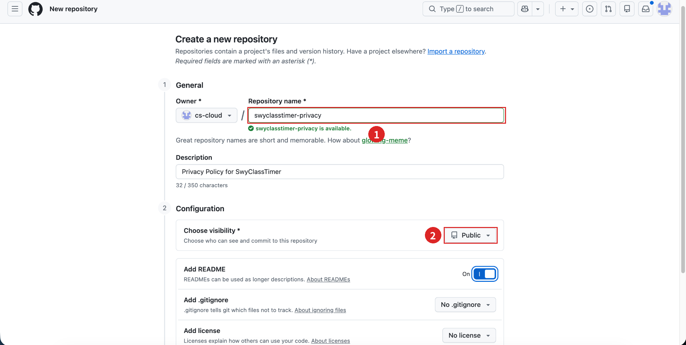
개인정보처리방침용 공개 저장소 만들기 (2026년 9월 강사 화면 · 빨간 번호 = 누를 곳 · 주황 점선 = 확인할 곳) 처리방침을 담은 index.html을 올린 뒤 [Settings] → [Pages]에서 [Deploy from a branch](①), 브랜치 main(②)을 고르고 [Save](③)를 눌러요. 클로드 코드에게 "이 저장소에 index.html을 올리고 깃헙 페이지스를 켜 줘"라고 시켜도 돼요.
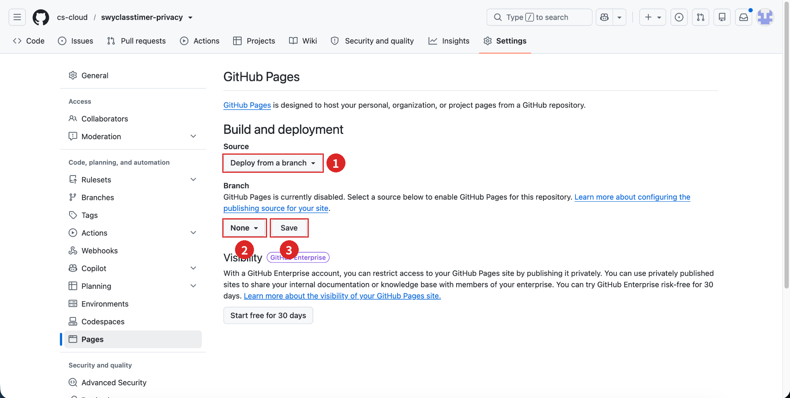
깃헙 페이지스 켜기 (2026년 9월 강사 화면 · 빨간 번호 = 누를 곳 · 주황 점선 = 확인할 곳) [Actions]에서 'pages build and deployment' 옆에 초록 체크가 생기면, 시크릿 창에서 주소가 로그인 없이 열리는지 확인해요.
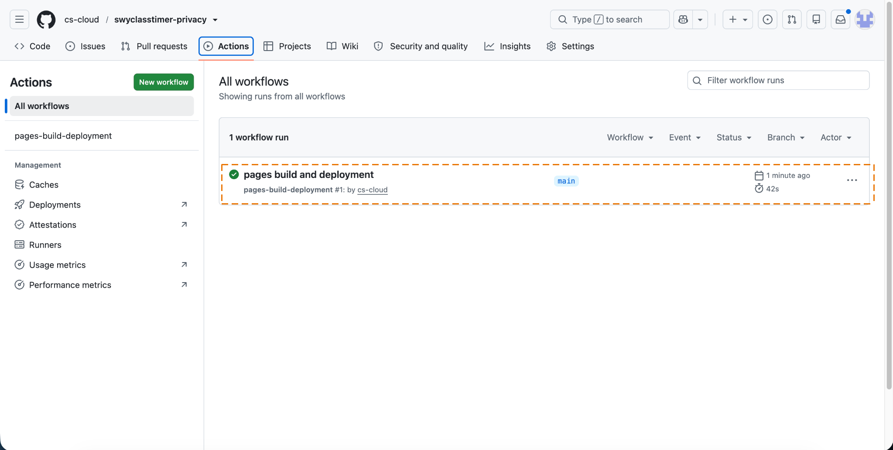
배포가 끝난 상태 (2026년 9월 강사 화면 · 주황 점선 = 확인할 곳)
- 표준약관
- 공정거래위원회가 업종별로 만들어 공개한 약관 본보기. 내 서비스에 맞게 고쳐 써요
- 깃헙 페이지스
- 깃헙 저장소의 HTML 파일을 누구나 열 수 있는 웹 주소로 공개해 주는 깃헙의 무료 기능
사례5-3. 약관을 바꿀 때 기획자는 이렇게 일해요
서비스가 바뀌면 약관도 바꿔야 해요. 셀렉트웨이는 2026년 11월에 스토어(디지털 상품)와 카드 결제를 새로 열면서 이용약관을 고쳤어요. 실제로 거친 순서는 이래요.
| 순서 | 할 일 | 셀렉트웨이 사례 |
|---|---|---|
| ① 바꿀 이유 정리 | 무엇이 바뀌어서 약관을 고쳐야 하는지 적어요 | 스토어 디지털 상품 판매 시작, 결제 방식을 카드 결제로 바꿈 |
| ② 바뀐 곳 목록 | 조항마다 전/후를 나란히 적어요 | 머리말·제1조 회사 표기, 제2조 정의 추가(상품 유형 3가지·구매자·결제대행사), 제4조 서비스에 스토어 추가, 제5조 결제 방식 전면 개정, 제6조 환불 기준을 상품 유형별로 나눔 |
| ③ 다른 문서와 맞추기 | 신청서·안내 메일·상품 화면의 문구와 약관이 같은지 봐요 | 기존 '수강 중 취소 시 수강 분량 공제' 조항이 신청서·안내 메일이 쓰는 평생교육법 기준과 달라 교체 |
| ④ 이용자에게 불리한가 | 불리하면 적용일 30일 전, 아니면 7일 전에 공지해요(약관에 적어 둔 기준) | 공고일 2026년 11월 10일, 시행일 11월 17일(7일) |
| ⑤ 법률 검토 | 원고 맨 위에 "법률 검토 전 원고"와 [확인 필요]를 남기고, 검토 뒤에 지워요 | 아직 열지 않은 '구매 내역 조회' 조항은 [확인 필요]로 두고 기능을 열기 전에는 게시하지 않음 |
| ⑥ 게시와 보관 | 시행일에 게시본을 바꾸고 버전을 남겨요. 예전 계약에 어느 약관이 적용되는지 부칙에 적어요 | 백오피스 [약관 관리]에 v1.1로 저장. 부칙에 "시행일 전에 맺은 계약은 그때의 약관을 적용" |
큰 서비스도 같은 일을 해요. 토스 공지사항에는 이용약관 개정 안내가 꾸준히 올라와요.
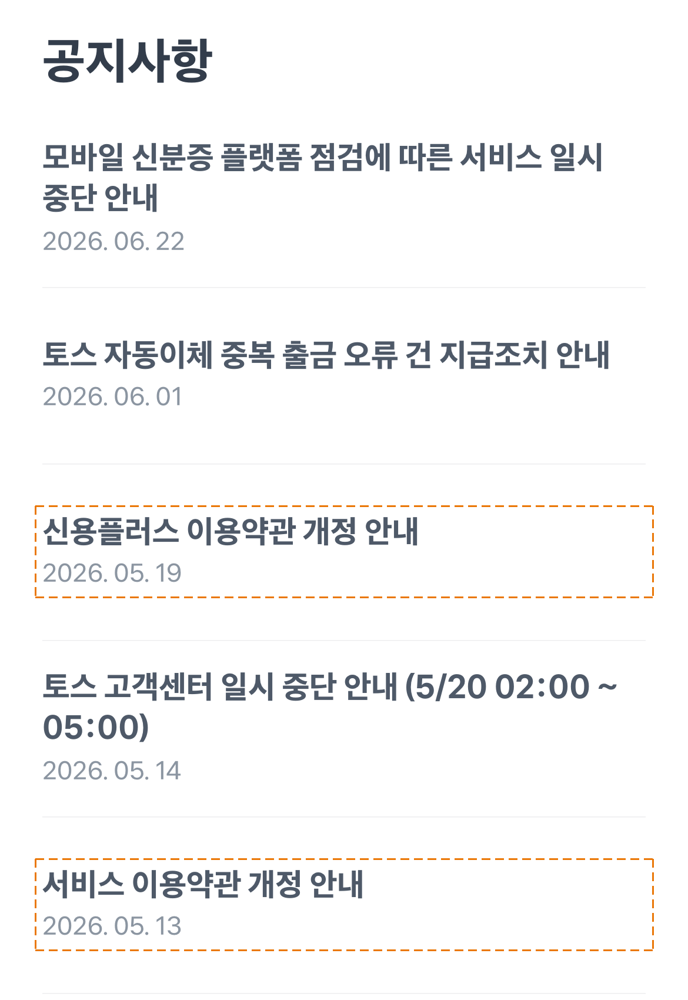
약관 변경 계획표
| 항목 | 내용 |
|---|---|
| 바꾸는 이유 | |
| 바뀌는 조항(전/후) | |
| 함께 고칠 문서(신청서, 안내 메일, 상품 화면, 개인정보처리방침) | |
| 이용자에게 불리한가 → 공지 기간(7일/30일) | |
| 공고일 / 시행일 | |
| 공지 방법(사이트 공지, 이메일 등 개별 통지) | |
| 법률 검토자 / 검토일 | |
| 게시본 버전과 보관 위치 |
요청: '내 문장 모음'에 [새 기능, 예: 문장을 구글 드라이브에 백업]을 더한다고 할 때, 개인정보처리방침과 이용약관에서 바꿔야 할 곳을 찾아 줘. 내용: 5-2에서 만든 두 초안을 기준으로 해. 바뀌는 조항만 고르고, 이용자에게 불리한 변경인지 이유와 함께 판단해 줘. 공지문 초안도 써 줘. 형식: ① 전/후 대조표(조항 / 지금 / 바꾼 뒤 / 불리한가) ② 공지 기간과 공고일·시행일 예시 ③ 공지문 초안
출처: 셀렉트웨이 이용약관 개정 원고 v1.1(2026-11-10 공고, 내부 문서) · 공정거래위원회 「전자상거래 등에서의 소비자보호 지침」(약관 개정 시 7일 전 공지, 불리한 변경 30일 유예 권고) · 개인정보보호위원회 처리방침 작성지침(2026-04) (2026-11-18 확인)
어떻게 알릴 것인가: 홍보·운영과 UTM
출시는 끝이 아니라 시작이에요. 사람들이 어디서 알고 들어왔는지 재야 다음 홍보를 정할 수 있어요.
개념6-1. 출시 뒤의 운영: 알리고, 듣고, 고치기
| 할 일 | 무엇을 하나요 | 스위노트 사례 |
|---|---|---|
| 알리기 | 블로그, SNS, 커뮤니티, 런칭 사이트에 소개해요 | 프로덕트 헌트(Product Hunt)에 런칭 게시물과 포럼 글을 미리 준비했어요 |
| 듣기 | 스토어 리뷰, 문의 메일, 의견 양식을 한곳에서 봐요 | 구글 설문지로 '스위노트 의견 수렴센터'를 만들었어요 |
| 고치고 알리기 | 버전을 올리고 무엇이 바뀌었는지 릴리즈노트로 알려요 | 릴리즈노트 정본은 블로그(note.swy.kr/blogs)에 쓰고, 스토어 설명 아래에는 요약만 넣어요 |
개념6-2. 마케팅 용어: 다이렉트 · 오가닉 · 페이드
사람이 내 사이트에 들어오는 길은 크게 세 가지로 나눠요. GA4는 들어온 길을 소스(어디서)와 매체(어떤 방식으로)로 기록하고, 정해진 규칙으로 채널을 나눠요.
| 용어 | 뜻 | 예 | GA4에서 보이는 모습 |
|---|---|---|---|
| 다이렉트(Direct) | 주소를 직접 치거나 즐겨찾기로 들어온 방문. 어디서 왔는지 알 수 없는 방문도 여기로 모여요 | 주소창에 직접 입력, 메신저 앱 안에서 연 링크 | 소스 (direct), 매체 (none) |
| 오가닉(Organic) | 돈을 내지 않고 자연스럽게 들어온 방문 | 네이버·구글 검색 결과, 인스타그램 게시물 | Organic Search(매체 organic), Organic Social |
| 페이드(Paid) | 광고비를 내고 데려온 방문 | 검색 광고, 인스타그램 광고 | Paid Search(매체 cpc·ppc 등), Paid Social |
이 밖에도 다른 사이트의 링크로 온 레퍼럴(Referral), 메일로 온 이메일(Email)이 있어요. UTM 꼬리표가 없으면 들어온 길을 몰라서 다이렉트가 늘어나요.
출처: Google 애널리틱스 고객센터 [GA4] Default channel group (2026-11-18 확인)
- 소스 / 매체
- 소스는 방문을 보낸 곳(google, instagram, newsletter), 매체는 방식(organic, cpc, email, social)
- 채널
- GA4가 소스와 매체를 보고 묶은 큰 갈래. Direct, Organic Search, Paid Social 같은 이름이에요
개념6-3. UTM: 링크에 붙이는 꼬리표
UTM은 링크 주소 끝에 붙이는 꼬리표예요. 사용자가 그 링크로 들어오면 GA4가 꼬리표를 읽어 "어느 채널·캠페인으로 왔는지" 기록해요. 사이트 코드는 고치지 않아요.
https://note.swy.kr/?utm_source=instagram&utm_medium=social&utm_campaign=2026_launch&utm_content=story_01
| 꼬리표 | 뜻 | 예 |
|---|---|---|
| utm_source 항상 | 어디서 왔나 | instagram, naver, newsletter |
| utm_medium 항상 | 어떤 방식으로 왔나 | social, cpc, email |
| utm_campaign 항상 | 어떤 캠페인인가 | 2026_launch |
| utm_content | 같은 캠페인 안에서 어떤 소재인가 | story_01, banner_top |
| utm_term | 유료 검색 키워드 | html_comment |
| utm_id | 캠페인 ID(비용 데이터를 가져올 때 씀) | launch26 |
조심할 점 ① source·medium·campaign 세 개는 항상 같이 써요. ② 값은 대소문자를 구분해요. SpringSale과 Spring_Sale은 서로 다른 값이에요. 소문자와 밑줄로 통일해요. ③ 내 사이트 안의 메뉴·배너 링크에는 붙이지 않아요. ④ UTM은 GA를 설치한 내 페이지로 가는 링크에 붙여요. 크롬 웹 스토어처럼 남의 페이지로 바로 보내면 내 GA에서는 볼 수 없어요. 그래서 홍보 링크는 내 소개 페이지로 보내고, 그 페이지에서 스토어로 넘겨요.
주소는 구글의 Campaign URL Builder에서 칸을 채우면 만들어져요.
출처: Google 애널리틱스 고객센터 [GA4] URL builders: Collect campaign data with custom URLs (2026-11-18 확인)
개념6-4. 단축 URL은 UTM을 짧게 보여 주는 포장지예요
UTM을 붙인 주소는 길어서 인스타그램 프로필, 문자, 인쇄물에 그대로 쓰기 어려워요. 이럴 때 단축 URL 서비스로 짧은 주소를 만들어요. 짧은 주소를 누르면 UTM이 붙은 원래 주소로 넘어가므로, GA에는 UTM 값이 그대로 남아요.
| 순서 | 할 일 |
|---|---|
| 1 | 채널마다 UTM 주소를 먼저 만들어요(6-5 표) |
| 2 | UTM이 붙은 전체 주소를 단축 서비스에 넣어요. 짧은 주소에 나중에 UTM을 덧붙이지 않아요 |
| 3 | 채널마다 짧은 주소를 하나씩 따로 만들어요. 한 짧은 주소를 여러 채널에 같이 쓰면 다시 섞여요 |
| 4 | 짧은 주소를 눌러 도착 페이지 주소창에 utm_ 값이 보이는지 확인해요 |
조심할 점 무료 요금제는 만들 수 있는 개수가 적어요. 예를 들어 Bitly 무료 요금제는 한 달에 짧은 링크 5개, QR 코드 2개까지예요(2026년 10월 기준). 단축 서비스가 세는 클릭 수와 GA의 방문 수는 세는 방법이 달라서 숫자가 다를 수 있어요. 성과는 GA 숫자로 봐요.
출처: Bitly Bitly Free Plan (2026-11-18 확인)
- 단축 URL
- 긴 주소를 짧은 주소로 바꿔, 누르면 원래 주소로 보내 주는 서비스
- 랜딩 페이지
- 홍보 링크를 누른 사람이 처음 도착하는 내 페이지. GA를 설치해 두는 곳이에요
실습6-5. 채널별 UTM 링크표 만들기
'내 문장 모음'을 출시했다고 생각하고, 채널마다 다른 링크를 만들어요. 도착 주소는 2-4에서 만든 깃헙 저장소의 깃헙 페이지스 주소나 내 소개 페이지로 해요.
요청: '내 문장 모음' 출시 홍보용 UTM 규칙표와 채널별 링크를 만들어 줘. 내용: 도착 주소는 [내 소개 페이지 주소]야. 채널은 [인스타그램 스토리, 블로그 글, 뉴스레터, 카카오 오픈채팅, 인스타그램 광고]야. 값은 모두 소문자와 밑줄로 쓰고, utm_source·utm_medium·utm_campaign은 꼭 넣어. 캠페인 이름은 하나로 통일하고, 광고는 medium을 cpc로 해. 내가 말하지 않은 채널은 추가하지 마. 형식: 표(채널 / 다이렉트·오가닉·페이드 중 무엇 / utm_source / utm_medium / utm_campaign / utm_content / 완성 주소). 표 아래에 팀이 지킬 규칙 3줄.
| 채널 | 구분 | utm_source | utm_medium | utm_campaign | 단축 주소 |
|---|---|---|---|---|---|
| 인스타그램 스토리 | 오가닉 | social | |||
| 뉴스레터 | 오가닉 | newsletter | |||
| 인스타그램 광고 | 페이드 | cpc | |||
- 모든 주소에 source·medium·campaign이 있다
- 값에 대문자·띄어쓰기·한글이 없다
- 캠페인 이름이 채널마다 같고, 광고만 medium이 cpc다
실습6-6. GA에서 채널별 성과 보기
GA4에서 [보고서] → [획득] → [트래픽 획득]을 열어요.
표의 첫 열 측정기준을 [세션 소스/매체] 또는 [세션 캠페인]으로 바꿔요. 6-5에서 붙인 utm 값이 줄마다 보여요.
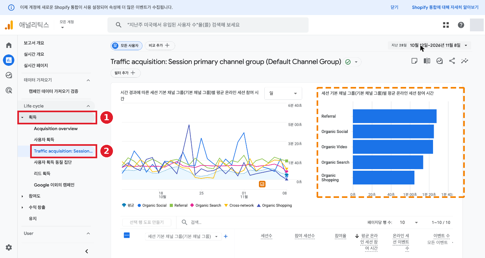
트래픽 획득 보고서 (GA4 데모 계정, 2026년 11월 9일 화면 · 빨간 번호 = 누를 곳) 채널마다 방문 수와 주요 이벤트(예: 설치 단추 클릭) 수를 비교하고, 다음 홍보에서 늘릴 채널과 줄일 채널을 한 줄씩 적어요.
| 이렇게 보이면 | 이렇게 해요 |
|---|---|
| (direct) / (none)이 너무 많아요 | UTM 없이 퍼진 링크가 많다는 뜻이에요. 채널마다 UTM 링크를 썼는지 봐요 |
| 같은 채널이 두 줄로 나와요 | Instagram과 instagram처럼 대소문자가 섞였어요. 규칙표대로 소문자로 통일해요 |
| UTM 값이 안 보여요 | UTM이 반영되기까지 시간이 걸릴 수 있어요. 실시간 보고서에서 먼저 들어오는지 봐요 |
GA4 화면은 AI PM 3주차 월요일 GA 수업과 같은 메뉴예요. 출처: Google 애널리틱스 고객센터 URL builders(트래픽 획득 보고서에서 세션 소스/매체·세션 캠페인 확인) (2026-11-18 확인)
오늘 정리와 과제
오늘의 규칙
- 확장 프로그램도 기획서부터. '하지 않을 일'과 '필요한 권한'을 먼저 적는다
- 권한은 가장 적게. 모든 사이트 권한은 정말 필요한지 다시 따진다
- 플랫폼에 올리면 그 플랫폼의 약관과 정책을 따른다. 출시 일정에 계정·테스트·심사 기간을 넣는다
- 약관과 개인정보처리방침은 실제 동작과 같게 쓰고, 바꿀 때는 이유·대조표·공지 기간·시행일을 남긴다
- 홍보 링크는 채널마다 UTM을 다르게 붙이고, 성과는 GA로 비교한다
- 고친 뒤에는 chrome://extensions에서 새로고침(↻)한다
- 다 만든 코드는 깃헙에 올려 보관한다. 고쳤으면 다시 올린다
- 내 크롬에서 테스트하는 데에는 개발자 등록이 필요 없다. 등록은 웹 스토어에 배포할 때만 한다
- 저장한 데이터가 어디에 남는지(내 크롬 안 / 바깥 서버) 말할 수 있어야 한다
내 문장 모음(깃헙 저장소) + 스토어 등록정보 초안 + 개인정보처리방침·이용약관 초안 + 약관 변경 계획표 + 채널별 UTM 링크표
① 아래 과제 1로 내 반복 업무 확장 프로그램을 만들어 깃헙에 올려요. ② 하루 동안 실제 업무에 써 보고, 줄어든 시간이나 불편했던 점을 한 줄 적어 와요. ③ 짝이 있으면 과제 2로 서로 바꿔 써 봐요.
내일은 지금까지 직접 시켰던 일을 AI가 여러 단계로 나눠 스스로 해 나가는 '에이전트' 기능을 알아봐요.
과제 1 · 내 반복 업무로 확장 프로그램 만들기
어제 적어 온 '크롬으로 매일 반복하는 일'로 기획서를 쓰고 시제품을 만들어요. 수업에서 만든 '내 문장 모음'과 같은 순서예요.
기획자과제 1-1. 아이디어 고르기
| 반복되는 일 | 확장 프로그램이 할 일 | 필요한 권한 |
|---|---|---|
| 회의록에 참고 링크 모으기 | 단추를 누르면 지금 탭의 제목·주소를 마크다운 한 줄로 복사 | activeTab |
| 열어 둔 탭 정리 | 열린 탭 목록을 한 번에 복사하고 닫기 | tabs |
| 업무 시간에 딴짓 사이트 줄이기 | 정해 둔 사이트를 열면 안내 문구 보여 주기 | 정해 둔 사이트만 host_permissions |
| 자주 쓰는 문장에 날짜 붙이기 | 문장 모음 카드를 누르면 오늘 날짜를 붙여 복사 | storage, contextMenus |
첫째 줄 '회의록에 참고 링크 모으기'의 완성본을 예시로 받아 볼 수 있어요. 내 아이디어를 정하기 어려우면 이 완성본을 설치해 써 보고, 내 일에 맞게 고쳐 써요.
| 항목 | 내 확장 프로그램 |
|---|---|
| 누가 | |
| 반복되는 일 | |
| 확장 프로그램이 할 일 | |
| 저장 위치·개수 | |
| 필요한 권한(가장 적게) | |
| 하지 않을 일 |
개발자·구현과제 1-2. 만들고 설치하기
요청: 새 폴더에 아래 기획서대로 크롬 확장 프로그램을 만들어 줘. 내용: [과제 1-1 기획서 표를 붙여 넣으세요] Manifest V3로 만들고, 기획서에 적은 권한 말고는 추가하지 마. 권한이 더 필요하면 만들기 전에 이유와 함께 먼저 물어봐 줘. 형식: 파일 목록과 각 파일이 하는 일, manifest.json의 권한 줄, 설치 순서.
설치는 2-2와 같아요. 고칠 때마다 새로고침(↻)을 눌러요.
다 만들면 2-4와 같은 프롬프트로 깃헙에 올려요. 저장소 이름만 내 확장 프로그램 이름으로 바꿔요.
결과과제 1-3. 결과
이렇게 보이면 성공manifest.json의 권한이 기획서의 '필요한 권한' 칸과 같다
과제 2 · 짝과 바꿔 써 보고 고치기
짝과 확장 프로그램 폴더를 바꿔 설치해 보고, 기획서대로 되는지 확인해요.
실습과제 2-1. 짝의 확장 프로그램 받아서 설치하기
내 깃헙 저장소 주소를 짝에게 알려 주고, 짝의 저장소 주소를 받아요. 받는 방법은 두 가지예요. 편한 쪽 하나만 해요.
방법 A. 클로드 코드에게 클론 맡기기
3주차 금요일에 깃헙 저장소를 내 컴퓨터로 내려받았던 '클론'과 같아요.
요청: [짝의 저장소 주소]를 내 컴퓨터로 클론해 줘. 내용: 이 폴더 안에 저장소 이름으로 새 폴더를 만들어 받아 줘. manifest.json이 어느 폴더에 있는지도 찾아 줘. 형식: ① 받은 폴더 위치 ② manifest.json이 들어 있는 폴더 위치를 한 줄씩.
방법 B. 깃헙에서 ZIP으로 내려받기
- 짝의 저장소 화면에서 초록색 [Code] 단추를 누르고 [Download ZIP]을 눌러요.
- 내려받은 ZIP의 압축을 풀어요. 깃헙 ZIP은 압축을 풀면 '저장소이름-main' 폴더가 생겨요.
- 그 폴더를 열어 manifest.json이 바로 보이는 폴더까지 들어가요.
설치는 2-2와 같아요. [압축해제된 확장 프로그램 로드]를 누르고 manifest.json이 바로 들어 있는 폴더를 골라요.
실습과제 2-2. 짝의 확장 프로그램 확인표
'바깥 서버로 보내는 요청이 없다'는 개발자 도구의 [Network](네트워크) 탭으로 확인해요.
chrome://extensions에서 짝의 확장 프로그램 카드에 있는 [서비스 워커] 링크(①)를 눌러요. 개발자 도구 창이 따로 열려요.
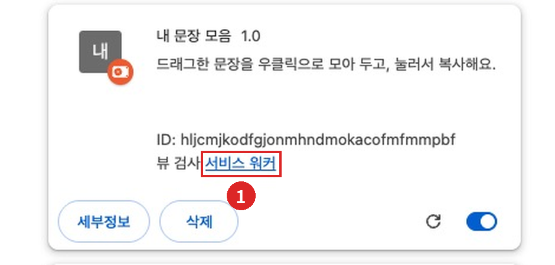
카드의 [서비스 워커] 링크를 눌러 개발자 도구를 열어요 (2026-11-18 강사 화면, 맥 크롬 · 빨간 번호 = 누를 곳 · 주황 점선 = 확인할 곳) 개발자 도구 위쪽의 [Network] 탭을 눌러요. 그다음 짝의 확장 프로그램을 몇 번 써 봐요.
목록에 새 줄이 생기지 않으면 바깥으로 보내는 요청이 없는 거예요. 새 줄이 생기면 주소를 적어 두고 짝에게 왜 필요한지 물어봐요.
| 확인할 것 | 예 / 아니요 | 메모 |
|---|---|---|
| 설명 없이 쓰는 법을 알 수 있었다 | ||
| 기획서의 '할 일'이 다 된다 | ||
| 권한이 기획서와 같다 | ||
| 바깥 서버로 보내는 요청이 없다(네트워크 탭) | ||
| 가장 먼저 고칠 한 가지 | ||